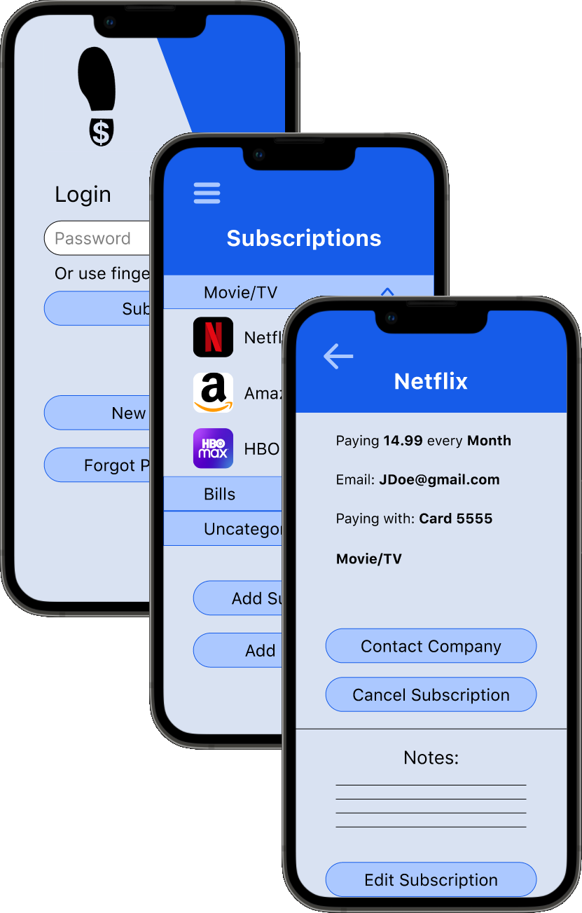
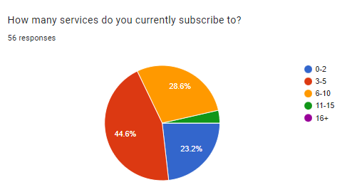
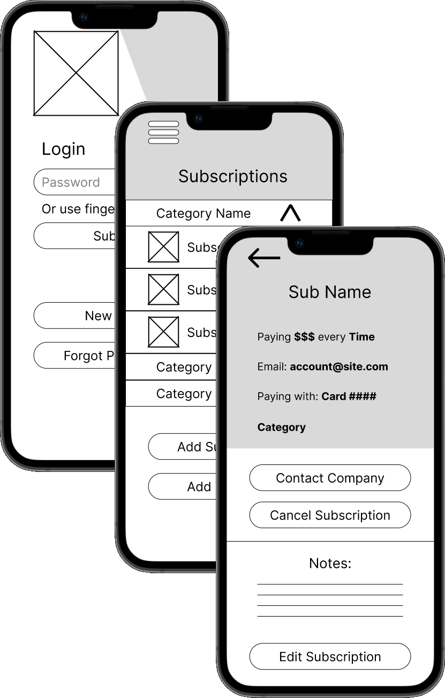

Subscription Tracker
A mobile app that helps manage your subscriptions  Check out the final prototypeThe Problem
A popular trend amongst modern companies is to offer their services for a recurring fee. Keep paying the subscription fee, and you can keep utilizing their product. This payment model has crept its way into almost every industry, leaving consumers with up to one or two dozen recurring payments to track and manage. For a majority of consumers, this is quite the mental load to keep track of, leading to missed payments and unexpected bills from a service they had meant to cancel
My subscription tracker app solves this issue by giving customers a tool that keeps all of their subscription information in one easy to access place, and makes keeping track of their monthly payments a much simpler task.
Discovery
The first step in designing this app was to learn more about what problems it would have to solve for people, and what they would expect some of those solutions to look like. I accomplished this by putting out a survey, and following up with several respondees to discuss their responses.
From the responses, I learned 3 signifigant lessons:
- Helping people track their subscriptions was a problem worth solving, as 67% thought an app that did exactly that would help them.
- Subscribers often forgot to unsubscribe from a service, resulting in unwanted payments (happening to over 3/4 of respondants).
- Subscribers placed a higher priority on features that displayed information about their subscriptions than features that allowed them to interact with their subscriptions.
Information Architecture
- Making an account
- Loging in
- Adding a subscription
- Checking a subscription's cost
- Checking a subscription's billing period
- Unsubscribe from a service
These user stories helped me craft user flows, outlining how users would naviage the app and complete each implemented user story.
Once all of the information was compiled into user flows and stories, I constructed several wireframes run some usability tests with potential visitors.
These usability tests provided excellent feedback, highlighting both the strengths and flaws in my design. One such flaw was that users had trouble creating a new category, meaning a solution had to be prototyped and tested in followup tests. For this particular issue, the solution came in the form of a "Create Category" button on the home screen, giving users easier access to this feature.
HiFi Mockups
After choosing typography anbd color schemes to go with the wireframes, I combined everything into a hi-fi mockup. This, in turn, was tested with potential users and senior designers to identify and fix any issues that were not apparent in the wireframes.
Conclusion
Throughout the design of this app, I was careful to keep the implementation of it in mind. One concern that repeatedly arose from potential users was that of data privacy, and how the app would interface with subscription services. I decided to solve this by designing the app to be completely offline, meaning users could rest assured the data they provide the app isn't being shared with any third parties. One major downside of this is that users would have to provide most of the information displayed on the app themselves. While this approach isn't as user-friendly as I would like, but was an unfortunately necessary trade off to protect users' information.